杭州市公安机关处置常见救助警情
标准操作程序
《中华人民共和国人民警察法》规定：“人民警察遇到公民人身、财产安全受到侵犯或者处于其他危难情形，应当立即救助。”本章列举了公安机关日常工作中部分常见的救助类警情。处置此类警情时，着重承担警务活动的职责，视情启动110社会联动机制，及时通知相关职能部门共同参与。救助过程中发现有违法犯罪行为的，应受案调查或移交有管辖权的单位，按照案件办理的要求开展处置。
一、住户被锁在自家门外
(一) 接到报警时，询问报警人基本情况、与房屋的关系，建议报警人联系同住人员、房东、专业开锁公司等开锁，或者建议报警人向社区、物业公司寻求帮助。
(二) 如报称室内有危重病人、儿童攀窗、燃气泄漏等危急情况的，应立即出警，并视情通知120、消防部门、开锁公司等同步赶赴现场。
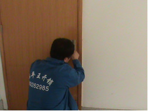 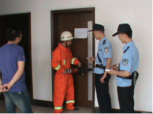
开锁公司工作人员实施开锁作业
消防队员利用工具开锁
(三) 处警民警到达现场后，应先查验报警人身份证明，询问被锁门外的原因。发现可疑的，应当告知其如果谎报警情将承担的法律后果。
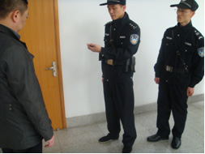
核实报警人身份
(四) 经核查，无法确定报警人身份、屋内没有危急情况的，处警民警可以拒绝帮助其开锁，防止报警人因感情、经济或房产纠纷等原因利用公安机关擅入室内。
如果报警人就此提出异议或投诉，应当告知：“因无法核实你是否为该房屋的合法居住人，警方拒绝协助是为了保护包括你在内的所有房屋居住人的合法权益”。
(五) 如果室内确有危急情况的，在确保安全的前提下，可采取破门（窗）、攀爬等方式进入（时间允许的，尽量通知专业开锁公司开锁进入）。攀爬时应当使用绳索等保护设备，防止发生意外。
进入室内排除危急情况以后，应当登记报警人身份情况。
二、住宅内燃气泄漏
燃气的性能
(一)燃气包括液化石油气、煤气和天然气，均为易燃气体，达到一定浓度后如遇火花有爆炸的可能。所以一旦发生泄漏，在事发地点及附近范围内不得开关、使用任何电器、通讯设备，包括开关电灯、电器，使用手机、电话等（开关上述设备可能产生微小火花，引起爆炸），更不得点火及吸烟。
(二)燃气有一定毒性，进入气体泄漏的室内，必须佩戴隔绝式防毒面具。
派出所配备的防毒面具一般为过滤式防毒面具，无法对煤气和天然气泄漏提供有效防护。因此，一般应由消防部门或者燃气公司专业人员进入室内进行处置。
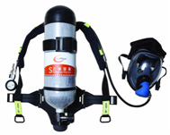 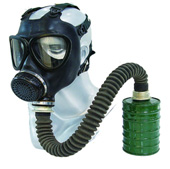
隔绝式防毒面具
过滤式防毒面具
(三)常用民用燃气多添加臭剂而具有臭味，但现场人员不能因为没有闻到或者闻到很淡的气味就认为是安全的。因为嗅觉敏感度因人而异，有些常见疾病（如感冒、鼻炎）也会对嗅觉造成较大影响。
接警
(四)接到住宅内燃气泄漏警情时，应问明警情发生详址，气体泄漏的种类及部位，有无人员中毒、昏迷及室内有无其他人员等情况，并视情启动110社会应急救助联动机制，通知相关联动单位派员赶赴现场处置。
1、如果报警人尚在室内的，应当告知：
(1)关闭燃气阀门（现场条件允许的情况下）；
(2)禁用明火，不得打开或者关闭任何电源开关及电器；
(3)用湿毛巾捂住鼻子和嘴，打开门窗，让燃气散出；
(4)室内所有人员都撤出，阻止无关人员靠近，等候专业人员处置。
注意：如果报警人使用移动电话的，让其到距住宅20米以外的地方继续接听电话；如果系固定电话的，应提醒报警人通话结束后将话筒搁在一旁，不得挂断电话，并迅速撤到住宅外安全地带。
2、如果报警人在室外的，应当告知：
(1)不得关闭电源总闸（即使总闸在室外的）；
(2)到距住宅20米外的地方接听电话；
(3)阻止无关人员靠近；
(4)保持手机畅通，并撤到安全地带等候处警人员。
(五)通知消防部门到场处置。现场有人员中毒，或者室内仍有人员未撤离且情况不明的，通知120赶赴现场。
(六)如果是管道燃气泄漏的，应通知燃气公司。杭州地区燃气公司联系方式：
|
区域 |
单位名称 |
电话 |
|
主城区 |
杭州市燃气（集团）有限公司 |
85356666
88828788 |
|
余杭 |
杭州港华燃气有限公司 |
86251111 |
|
萧山 |
杭州萧山管道燃气发展有限公司 |
82713401 |
|
杭州中燃城市燃气发展有限公司 |
82885655 |
|
桐庐 |
桐庐杭燃燃气有限公司 |
69813888 |
|
建德 |
建德市升力管道燃气有限公司 |
64732375 |
|
淳安 |
淳安胜嘉利天然气有限公司 |
65027022 |
|
富阳 |
富阳华润燃气有限公司 |
63322312 |
|
临安 |
杭州临安加顺管道燃气开发公司 |
63750381 |
(七)如燃气泄漏现场紧邻道路的，应考虑周边通行车辆、人员的安全。必要时，指挥中心指令交警赶赴现场，暂时封闭相关道路，实施交通改道或临时交通管制措施。
现场处置
(八)处置人员应当在事发地点50米范围以外，选择上风或者侧上风方向停好车辆，并将车头朝向便于撤离的方向。
(九)进入事发地点20米范围内，应当关闭手机、对讲机等通讯工具。通讯联系应当到远离事发地点的安全区域进行。
(十)视情疏散周围群众，搬离现场周边的易燃易爆物品。在事发地点外建立半径为20米以上的警戒区，拉起警戒带，设立警示标志。对于天然气泄漏的，警戒区范围还应适当扩大。
注意：禁止在警戒区内关启电源开关或电器，如按动门铃、使用手机或电话，更不得使用明火或吸烟，防止发生爆炸。
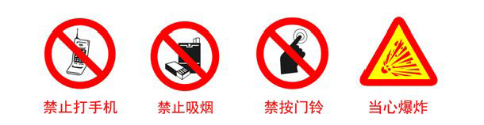
(十一)迅速了解漏气的具体位置和原因，如系管道天然气泄漏的，寻找并关闭室外总阀。
(十二)及时疏通安全出口和消防车通道。
(十三)除需要及时疏散、抢救人员等紧急情形，处警民警一般不要进入气体泄漏的室内，等待消防、燃气公司等专业人员到场处置。在警戒区域内，最大限度减少处置人员数量。
(十四)在消防部门、燃气公司专业处置人员到达现场前，室内有人员需要立即救助的，一般应做到：
1、穿全棉衣物和防静电工作服，佩戴隔绝式防毒面具进入；
2、如需破门进入的，应使用专业防爆工具进行作业（普通工具破门时容易产生火星引发爆炸）；
3、进入室内后感觉呼吸困难或气味浓烈的，应立即撤出；
4、进入室内找到伤者后，迅速将其移至通风良好、空气新鲜的地方，解开衣扣、抬高下颌使其呼吸顺畅，等待120到场或直接送医院救治。
(十五)消防部门、燃气公司专业人员赶到现场后，向其介绍现场的相关情况，并按照消防部门现场指挥员及其他专业人员的意见，再次确定安全距离，划定警戒范围，做好外围警戒和车辆、人员疏散工作。
(十六)已经过火或者爆炸的现场，仍有可能复燃和再爆，处置时仍需按照前述步骤进行操作。
三、公共场所有人昏厥
接警
(一) 接到公共场所有人昏厥的报警时，接警人员应当向报警人询问发生地点、昏厥者性别与大体年龄、亲友是否在场、昏厥原因等情况，立即通知120赶赴现场。
(二) 处警单位接到指令后，迅速赶赴现场处置。
处置
(三) 到达现场后，应疏散围观人员，维持秩序。
1、若是室内现场的，将无关人员全部疏散至室外，并打开门、窗，使空气流通；
室内现场将无关人员疏散至室外
室内现场打开门、窗
2、若是室外现场的，尽量将围观人员全部疏散至中心现场以外，必要时拉起警戒带。
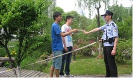
将无关人员疏散至中心现场以外
(四) 根据现场自然环境、昏厥者随身携带药物、周边人员反映的情况等初步判断昏厥原因。
(五) 通过访问周边人员、翻查昏厥者随身携带的证件、手机通讯录等方式查明昏厥者身份。昏厥者亲友未在场的，设法通知其亲友到场；昏厥者亲友已经在场的，向其了解具体情况。
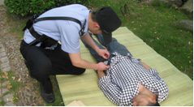
通过昏厥者随身携带物品查找线索
(六) 可用手轻轻拍打昏厥者肩部，对其进行反复呼唤。
有的昏厥者可能处于半昏迷状态，若看到其有张嘴迹象，应贴近其嘴部仔细倾听，尽可能从其口中了解昏厥的原因或其他信息。
(七) 在120救护人员赶到之前，不要随意搬动昏厥者身体，以免操作不当造成其他伤害。
注意：如果遇到下雨、下雪或暴晒等恶劣天气的，应当为昏厥人员采取必要的遮挡防护措施。
(八) 在处警过程中，如果昏厥者自行苏醒，处警民警应告知昏厥者不宜立即起身行走，劝其平卧几分钟后再慢慢坐起。待其身体状况稳定后，询问其昏厥的原因、需不需要联系家属等。根据昏厥者的需要，提供力所能及的帮助。
(九) 120救护人员到场后，应当积极配合做好急救工作，将了解到的情况（包括初步判断的昏厥原因）告知救护医生，便于医生快速开展救治。若120救护人员要送昏厥者到医院的，应问明送往哪家医院。
注意：现场警力应积极联系120，如果120救护人员不能够及时赶到的，视情使用警车将昏厥者送往医院。
(十) 鉴于昏厥者无法看护自己财物，故处警人员须查看并妥善看管现场周边昏厥者遗落的随身物品。事后及时与昏厥者或其亲友做好财物交接。
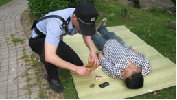
妥善保管昏厥者的财物
(十一) 出现以下情形的，应及时做好知情人员的询问工作，查看现场及周边的监控录像，做好调查取证工作：
1、昏厥原因不明或家属对昏厥原因存在异议的；
2、昏厥者生命垂危的；
3、昏厥可能是外力侵害所致的；
4、有其他需要查明情形的。
(十二) 昏厥者死亡的，按照《杭州市公安机关处置不明原因死亡警情操作规范》处置。
四、弃婴
弃婴警情，是指公民或其他组织向公安机关报告发现有被遗弃的婴儿或将捡拾的婴儿送往公安机关的警情。
接警
(一)接到弃婴警情时，向报警人询问发现婴儿的时间、地点及当时婴儿的状况，是否看到遗弃婴儿的可疑人员等。如果报警人还在现场的，尽量让其留在现场等待民警到场处置。
如果报警人报称婴儿生命体征不明显或有明显外伤的，立即通知120赶赴现场。
(二)如果捡拾人将弃婴直接送至公安机关的，接收地派出所应立即开展后续处置工作。
现场处置
(三)视情指派有育儿经验的女性工作人员随同处置。
女性工作人员随同处置
(四)到达现场后，拍照固定婴儿所处的位置、当时的衣着、状态等。对可以反映地域特征、风俗习惯等情况的特殊物品，应拍摄整体照与局部细节照加以固定。
如果婴儿是在公共厕所内被发现，且符合新生儿特征的，应第一时间送医院抢救。
(五)观察婴儿的身体状况，或由120救护人员确定婴儿的生命体征、健康状况。如果婴儿生命垂危的，立即送往医院抢救，同时与儿童福利院联系和办理收养手续，以解决费用问题。
注意：婴儿属一般疾病的，待警情处置完毕后送儿童福利院（找到家属的除外），由民政部门负责后续治疗。
(六)如果报警人在现场的，登记报警人的身份信息，仔细询问发现婴儿的经过，必要时制作询问笔录。若报警人已离开现场的，应设法与其取得联系，尽可能了解当时现场的详细情况。
(七)对现场周边沿街店铺、来往群众等进行走访调查，了解是否有其他目击证人。对相关人员进行询问并登记，必要时制作询问笔录。
(八)对婴儿的随身物品进行检查。检查时应当做到：
1、检查地点应选择温度适宜的环境（若现场条件不允许的，可以带到医院或者带回办案单位后再检查）；
2、检查时应戴手套，以免破坏物品（如遗留的纸条）上的指纹、DNA等痕迹物证。对可能留有遗弃人痕迹的物证，要妥善封存。
(九)若婴儿被遗弃在人迹罕至的偏僻地点（如荒山野林等处），行为人主观上有致婴儿死亡的故意，可能涉嫌故意杀人，应通知刑侦技术部门派员到场勘验。
(十)将婴儿和现场相关人员带回派出所，并妥善照顾婴儿。
后续处置
(十一)采集婴儿的DNA样本并送交DNA实验室。对可能留有遗弃人痕迹的物证送技术部门进一步处理。
(十二)对报警人和目击证人提供的线索、现场周边的视频监控资料等进行调查，查找遗弃人或家属。必要时可以向相关医院的产科、儿科等了解有无该婴儿的出生或救治信息。
(十三)视情通过报纸、电视、网络等媒体查找婴儿的家属。
(十四)通过调查，找到遗弃人的，询问两者关系和遗弃的原因、地点等内容，制作笔录。
1、遗弃人系婴儿家属的，遗弃情节轻微（如确属生活困难无抚养能力的）且愿意抚养的，在笔录上注明后由其领回；
遗弃情节恶劣或拒绝抚养的，依法对遗弃行为作出处理，将婴儿交其他家属抚养。没有其他家属或其他家属拒绝抚养的，移交儿童福利院照看。
2、遗弃人非婴儿家属的，调查是否涉嫌拐卖、冒领等行为。
注意：对自称是婴儿家属，主动上门前来认领的人员，应注意甄别，防止冒领，应采集其DNA样本送实验室做亲缘关系鉴定。
(十五)未找到遗弃人或家属的，将婴儿移交儿童福利院收养。移交时，应将婴儿随身的原物一并交给福利院，特别是载有婴儿出生日期的纸条等物品。移交时办理以下手续：
如果有捡拾人的，填写《捡拾弃婴登记表》（附件1），和《捡拾弃婴报案及查找不到生父母证明》（附件2）；无捡拾人的，则填写《捡拾弃婴登记表》和《无法出具捡拾人捡拾弃婴证明的情况说明》（附件3）。
杭州地区儿童福利院一览表
|
序号 |
单位名称 |
地址 |
联系电话 |
|
1 |
杭州市儿童福利院 |
西湖区西溪路850号 |
85249063 |
|
2 |
余杭区儿童福利院 |
余杭区临平南苑街道望梅路1号 |
89189886 |
|
3 |
萧山区儿童福利院 |
萧山区高桥小区高乐路1号 |
82379697 |
|
4 |
富阳市社会福利院 |
富阳市富春街道北堤北路19号 |
63372527 |
|
5 |
桐庐县社会福利中心 |
桐庐县城南街道尖端路255号 |
58587711
58587719 |
|
6 |
临安市社会福利中心 |
临安市横潭村五虎山白沙岭 |
63927950 |
|
7 |
建德市社会福利院 |
建德市仁爱路68号 |
64758324 |
|
8 |
淳安县综合社会福利院 |
淳安县环湖南路2号 |
64881008 |
五、迷途求助
迷途求助，是指儿童、精神病人、智障患者等人员在日常生活中迷路或者与家属、亲友走散，公民或者其他组织发现后向公安机关报警或直接将人员送至公安机关的警情。
当事人在山林、野外等地迷路而报警求助的警情参照《杭州市公安机关山林搜救标准操作程序》处置；流浪乞讨警情参照《杭州市公安机关处置乞讨警情标准操作程序》处置；人员失踪的警情参照《杭州市公安机关处置失踪警情标准操作程序》处置。
接警
(一)迷途求助警情，由最初发现或者接受指令的公安机关统一受理、统一处置，不得以任何理由推诿、拖延或者拒绝。
(二)接到迷途求助警情时，应当向报警人询问发现迷途人员的时间、地点、迷途人员的状况、有无受伤等情况。如果报警人还在现场的，尽量让其留在现场等待民警到场处置。
(三)对于迷途人员自行上门求助或群众将迷途人员送至公安机关的，应认真受理，开展信息登记、查找关系人、人员安置等工作。
现场处置
(四)看护好迷途人员，向报警人和周边群众了解发现迷途人员的具体情况，包括发现时间、地点、当时状态、之前有无家属陪伴、有无乘坐交通工具及何种交通工具等。
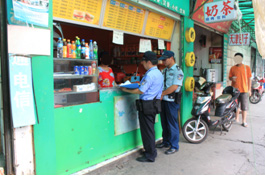
询问报警人或者周边群众
(五)若发现迷途人员有明显外伤的，及时拍照固定，向本人或周边人员了解伤势的成因。如果伤势严重的，立即通知120到场或直接送往医院急救。
(六)向迷途人员(若有语言沟通能力的)了解身份、家庭住址、家属及联系方式、前往目的地等情况。对情绪比较激动或不稳定的迷途人员，及时稳定其情绪。
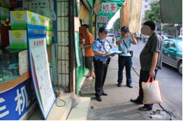
.jpg)
询问迷途人员基本情况
(七)可对迷途人员随身物品以及外衣裤口袋等进行检查，查找有关身份信息资料。
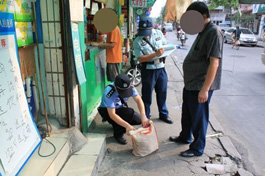
检查迷途人员随身物品
(八)对于迷途时间不久的，应及时在现场周边开展查找工作。
1、迷途人员离住所或亲友不远的，应及时走访周边群众，寻找其住所或亲友；
2、对能辩识或模糊辩识住所的迷途人员，应带领迷途人员寻找其住所；
3、查看现场周边设施，有条件的应及时通过广播、大屏幕等发布信息，寻找迷途人员的家属、亲友。
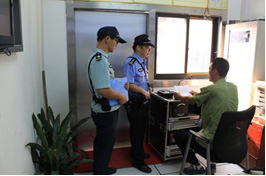
通过广播寻找迷途人员的家属亲友
(九)通过110指挥中心查询近期是否有类似人员的失踪报警。未搜索到类似失踪报警的，则将迷途人员的身份信息、体貌特征等情况告知指挥中心，一旦其家属报警可快速找到。
(十)如果在现场获取迷途人员或其家属的身份信息，可致电市局查询中心（电话527114），取得与其家属的联系方式。
(十一)找到迷途人员家属的，经核实家属的身份后，让其在《110处警现场情况登记表》上签名并领回迷途人员。
电话联系到家属的，通知家属领人，也可以直接将迷途人员护送回住所。
(十二)无法了解到迷途人员及其家属基本情况或在现场处置有难度的，将迷途人员带回派出所。民警离开现场前，告知周边居民、保安、摊贩等，如果家属前来寻人可联系XX派出所。
(十三)在执行大型活动安保任务中，发现与家属、亲友走散的迷途人员，除按照前述要求开展工作外，应当及时在现场开展联系查找工作。
1、对迷途人员能够提供家属亲友联系方式的，应积极与其家属亲友取得联系；
2、迷途人员无法提供家属联系方式的，应向现场指挥部报告；
3、现场指挥部接到报告后，应当安排专门人员对迷途人员做好暂时看护工作，并通知现场执勤民警帮助查找家属；
4、安保任务结束仍未查找到迷途人员家属亲友的，应当通知辖区公安机关将迷途人员带回并负责做好后续处置。
后续处置
(十四)对带回派出所的迷途人员及时进行登记，发现迷途人员可能遭受违法犯罪侵害或有违法犯罪行为的，应当制作笔录，并报告值班所领导，进一步开展调查工作。
(十五)及时查明迷途人员的身份，查找其家属。
1、全面细致地检查衣服的口袋及其随身物品，发现可能存在的身份信息。翻找女性人员的口袋，一般应由女性工作人员进行；
2、通过信息综合查询系统、打防控失踪人员库、110接处警派单系统等查找迷途人员及其家属身份信息；
3、及时将已掌握的迷途人员基本情况上报市局指挥中心，通报全市派出所知晓；
4、视情通过报纸、电视等媒体或网络发布认领信息。
(十六)找到迷途人员家属的，通知家属尽快到公安机关领人并办理交接手续，也可以将迷途人员护送回家。
(十七)未能找到迷途人员家属的，采集迷途人员的身份信息、照片、DNA样本等，将信息录入“治安管理信息系统”流浪乞讨人员模块，并妥善安置：
1、迷途人员系精神病人的，送往当地精神病医院；
2、迷途人员为6周岁以下儿童的，护送至当地儿童福利院；
3、对于符合救助条件的其他人员，填写《救助人员告知单》后，送往当地救助站安置。
(十八)在处置过程中发现迷途人员受伤或患病较重需立即救治的，民警应立即通知120或直接送往医院。
注意：未找到家属的迷途人员，一般送至民政、卫生部门指定的定点医院救治，以解决治疗费用问题（杭州城区的定点医院目录及手续要求参见《杭州市公安机关处置乞讨警情标准操作程序》“患病、残疾人员乞讨”章节）。
(十九)将迷途人员进行分流安置的，负责护送的民警应在做好人员去向的交接记录，并让接受单位、部门的相关人员签名确认。
附件:１、捡拾弃婴登记表
2、捡拾弃婴报案及查找不到生父母证明
3、无法出具捡拾人捡拾弃婴证明的情况说明(见附件)